1
ストライク×3
アタック・基本
6（強化 9）ダメージを与える。
Slay the Spire 2 MOD v0.9.1・全86枚・2026-11-21 更新 緑の数字は強化後の値
アタック・基本
6（強化 9）ダメージを与える。

スキル・基本
5（強化 8）ブロックを得る。

アタック・基本
3（強化 5）ダメージを与える。
毒 4（強化 5）を付与する。

スキル・基本
破滅 6（強化 8）を2回付与する。

スキル・コモン
すべての敵に毒 3（強化 4）を付与する。
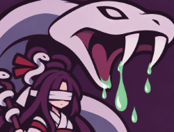
スキル・コモン
毒 5（強化 7）を付与する。

スキル・コモン
破滅 14（強化 18）を付与する。

アタック・コモン
5（強化 7）ダメージを与える。
破滅 8（強化 10）を付与する。
アタック・コモン
2（強化 3）ダメージを与える。
毒 1（強化 2）を付与する。

スキル・コモン
破滅 7（強化 9）を付与する。

スキル・コモン
9（強化 11）ブロックを得る。

アタック・コモン
6（強化 8）ダメージを与える。
この敵が毒を持っていれば、毒 4（強化 5）を付与する。

スキル・コモン
毒 2（強化 3）を2回付与する。

スキル・コモン
すべての敵に破滅 9（強化 11）を付与する。

アタック・コモン
7（強化 9）ダメージを与える。
この敵の破滅がHPの半分以上なら、もう一度 7（強化 9）ダメージを与える。
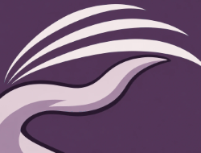
アタック・コモン
3（強化 4）ダメージを3回与える。
（ストライク）

スキル・コモン
このターン、敏捷 3 を得る。
5（強化 8）ブロックを得る。

スキル・コモン
5（強化 7）ブロックを得る。
ランダムな敵に毒 2（強化 3）を付与する。

スキル・コモン
6（強化 7）ブロックを得る。
破滅 6（強化 8）を付与する。
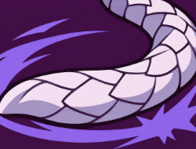
アタック・コモン
2（強化 3）ダメージを与える。
活力 4（強化 5）を得る。

スキル・コモン
2（強化 4）ブロックを得る。
破滅を持つ敵がいれば、さらに 3 ブロックを得る。

スキル・コモン
カードを1枚引く。
ランダムな敵に毒 1（強化 2）を付与する。

スキル・コモン
カードを 2（強化 3）枚引く。
手札の毒か破滅を付与するカードを1枚アップグレードする。

アタック・コモン・強化でコスト1
この敵の毒に等しいダメージを与える（毒は減らない）。
戦闘中は実際のダメージを表示。

スキル・アンコモン
HPを 3（強化 5）回復する。
最大HPを1増やす。
廃棄。

パワー・アンコモン
ターン開始時、ランダムな敵に毒 1 を 4（強化 5）回付与する。

パワー・アンコモン
毒か破滅を付与するカードをプレイするたび、2（強化 3）ブロックを得る。

アタック・アンコモン
9（強化 12）ダメージに加え、敵の破滅の半分（切り捨て）の追加ダメージを与える。
戦闘中は実際のダメージを表示。

スキル・アンコモン
カードを 2（強化 3）枚引く。
このターン、次にプレイする毒か破滅を付与するカードのコストが0になる。

スキル・アンコモン
毒 2（強化 4）を付与する。
この敵の毒と同じ量の毒を、他のすべての敵に付与する。
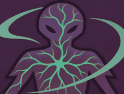
スキル・アンコモン
毒 10（強化 13）を付与する。

スキル・アンコモン・強化でコスト1
この敵の破滅を2倍にする。
廃棄。
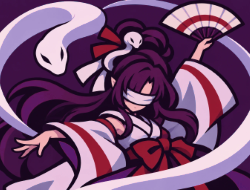
パワー・アンコモン
（強化で天賦）
毒を付与するカードは毒が1増える。

パワー・アンコモン
破滅を付与するカードは破滅が 3（強化 5）増える。

スキル・アンコモン
破滅 2（強化 4）を付与する。
カードを1枚引き、HPを1回復する（回復は1ターンに1回まで）。
このカードのコストが1減少する（この戦闘中）。

スキル・アンコモン・マルチ専用
HPを10失う。
他のプレイヤー1人のHPを 15（強化 20）回復する。
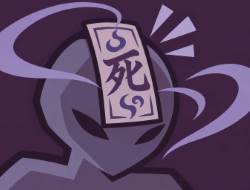
スキル・アンコモン
破滅 10（強化 13）を付与する。
この敵の破滅がHP以上なら、エナジー1を得て、HPを2回復する。
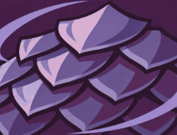
パワー・アンコモン
ターン終了時、3（強化 4）ブロックを得る。

スキル・アンコモン
9（強化 12）ブロックを得る。このターンにプレイしたカード1枚につき3減る（9→6→3→0）。
このターン、筋力を4失う。
保留。

スキル・アンコモン
プレート 5（強化 7）を得る。
HPを2回復する。
廃棄。

アタック・アンコモン
6ダメージに加え、このターンにプレイした毒か破滅を付与するカード1枚につき 5（強化 6）ダメージを与える（このカード自身は数えない）。
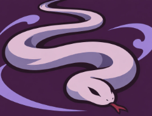
スキル・アンコモン
カードを 2（強化 3）枚引く。
カードを1枚捨てる。
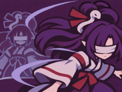
スキル・アンコモン
エナジー1を得る。強化するとさらにカードを1枚引く。
廃棄。

アタック・アンコモン
ランダムな敵に3ダメージを与え、毒 1 を付与する。これを 3（強化 4）回行う。
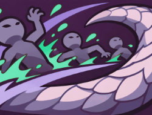
アタック・アンコモン
すべての敵に 6（強化 8）ダメージを与える。
すべての敵に毒 2（強化 3）を付与する。
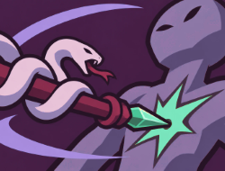
アタック・アンコモン
15（強化 19）ダメージを与える。
この敵が毒を持っていれば、エナジー1を得る。

アタック・アンコモン
3（強化 5）ダメージを与え、カードを1枚引く。これを2回行う。
（1回の攻撃の2ヒットなので、活力は両方に乗る）

スキル・アンコモン
すべての敵に、それぞれが持つ毒と同じ量の破滅を付与する（毒は減らない）。
廃棄（強化で廃棄なし）。
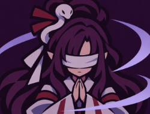
スキル・アンコモン
8（強化 11）ブロックを得る。
カードを1枚引く。
手札のカード1枚にエセリアルを付与する。

スキル・アンコモン
このターン、毒を付与するカードは毒が1、破滅を付与するカードは破滅が3増える。
強化で保留が付く。
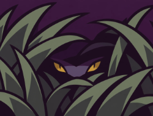
スキル・アンコモン
7（強化 9）ブロックを得る。
次のターン、カードを2枚引く。

パワー・アンコモン・強化でコスト0
毒か破滅を付与するカードをプレイするたび、ランダムな敵に毒 1 を付与する。

パワー・アンコモン・強化でコスト0
毒か破滅を付与するカードを3枚プレイするたび、カードを1枚引く。

パワー・アンコモン
攻撃を受けるたび、攻撃した敵に破滅 3（強化 4）を付与する。
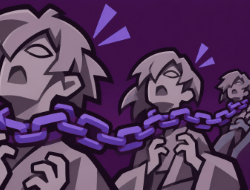
パワー・アンコモン
敵が破滅で倒れるたび、他のすべての敵に破滅 16（強化 19）を付与する。

スキル・アンコモン
毒 3（強化 5）を付与する。
カードを1枚引く。

スキル・アンコモン
破滅 9（強化 11）を3回付与する。

アタック・アンコモン
4（強化 6）ダメージを与える。
毒 3（強化 4）と破滅 7（強化 9）を付与する。

パワー・アンコモン
HPを回復するたび、このターン筋力 1（強化 2）を得る。

アタック・アンコモン
4（強化 6）ダメージを与える。
この敵が破滅を持っていれば、破滅 12（強化 15）を付与する。
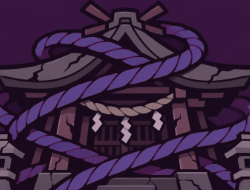
スキル・レア
破滅 40（強化 55）を付与する。
廃棄。

スキル・レア
敵の毒をすべて取り除き、その3倍の破滅を付与する。
強化で保留が付く。

スキル・レア・強化でコスト3
この敵をスタンさせる。
廃棄。
パワー・レア
毒を付与するカードの毒が1.5倍（切り捨て）、強化で2倍になる。
2枚出しても2倍になる。

スキル・レア
破滅 16（強化 19）を付与する。
この敵の破滅がHP以上なら、即座に倒す。

アタック・レア
8（強化 13）ダメージを与える。
この敵の毒を1.5倍（切り捨て）にする。
その後、この敵の破滅をすべて取り除き、その1/3（切り捨て）の毒を付与する。廃棄。
アタック・レア
6（強化 8）ダメージを与える。
この敵が毒と破滅の両方を持っていれば、ダメージが3倍（18／強化 24）になる。

アタック・レア
すべての敵に 14（強化 18）ダメージを与える。
自分の脱力・弱体・脆弱を取り除く。
スキル・レア
3（強化 6）ブロックに加え、すべての敵の破滅の合計の3分の1（切り捨て）のブロックを得る。
マルチでは破滅の部分だけ、破滅を使うプレイヤー（蛇の巫女・ネクロバインダー）の人数で割る。

パワー・レア
ターン開始時、ブロックがすべて消えず、3分の1（切り捨て）残るようになる。
強化で半分残る。

スキル・レア・強化でコスト2
すべての敵の毒の合計の1/2（切り捨て）だけ、HPを回復する。マルチではさらに、毒を使うプレイヤー（蛇の巫女・サイレント）の人数で割る。
廃棄。

スキル・レア
すべての敵の毒を、今すぐ 1（強化 2）回発動させる（毒は減らない）。

スキル・レア
この敵の破滅の1/4（切り捨て）を取り除き、取り除いた分の半分（強化で全部）だけHPを回復する。
廃棄。

パワー・レア
破滅を持つ敵へのアタックが、1ヒットごとにその敵の破滅の1/10（強化 1/8、切り捨て）だけ増える。
マルチでは、破滅を使うプレイヤー（蛇の巫女・ネクロバインダー）の人数で割る。
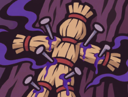
アタック・レア
2ダメージを与え、破滅 2 を付与する。これを 5（強化 7）回行う。

パワー・レア・強化でコスト0
破滅を持つ敵が毒でHPを失うたび、失った量の半分（切り捨て）の破滅を得る。

パワー・レア・強化でコスト2
毒と破滅の両方を持つ敵は、毒と破滅の合計がHP以上なら、破滅で倒れる。
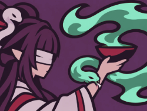
パワー・レア・強化でコスト1
ターン開始時、エナジー1を得て、カードを1枚多く引き、自分に毒 3 を付与する。
自分が毒で失うHPは半分になる。
自分の毒が発動するたび、すべての敵に自分の毒と同じ量の毒を付与する。

アタック・レア
7ダメージを与え、5ブロックを得る。
手札に噛みつきと舌先を1枚ずつ加える（強化で、強化済みのものを加える）。
エセリアル。
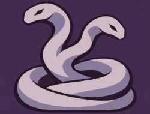
パワー・レア
現在のHPの3分の1（強化 4分の1、切り捨て）を失う。
毎ターン、最初にプレイする毒を付与するカードと、破滅を付与するカードが、それぞれもう1回発動する。

スキル・レア
このターン、毒か破滅を付与するカードのコストがすべて0になる。
カードを 1（強化 2）枚引く。廃棄。

パワー・レア・強化でコスト0
コスト0のカードをプレイするたび、カードを1枚引く（1ターン3回まで）。

パワー・レア
ターン開始時、すべての敵に破滅 8（強化 11）を付与する。
バッファー 1 を得る。

スキル・レア
7（強化 9）ブロックを得る。
山札のカードを2枚選んで廃棄する。
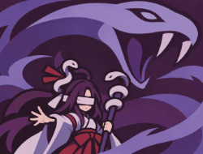
スキル・エンシェント
破滅 7（強化 9）を3回付与する。
天賦。

アタック・エンシェント
敵1体に2（強化 3）ダメージを与え、毒 1 を付与する。これを 8 回行う。
（毒蛇が「古びた歯」で変化するカード）